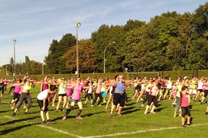

+ Zumba Fluo Party
Samedi 28 septembre
Zumba Fluo Party
Samedi 28 septembre
de 16 à 18 heures
Stade de Chevilly
Participation minimum : 1 € par personne
+ Zumba Fluo Party
Samedi 28 septembre
Zumba Fluo Party
Samedi 28 septembre
de 16 à 18 heures
Stade de Chevilly
Participation minimum : 1 € par personne
+ Thé Dansant
Samedi 28 septembre
Thé dansant
Samedi 28 septembre
de 15 à 19 heures
Salle des fêtes de Chevilly, rue du Stade
Entrée : 10 € (1 boisson chaude et 1 crêpe offertes)
Réservations : 02 38 74 10 04 / 06 80 90 48 40
+ Le vide-grenier de Chevilly
Dimanche 29 septembre
Vide-grenier
Tout autour du stade et dans les rues de Chevilly
Dimanche 29 septembre
A partir de 8 heures
+ Donner son souffle
Dimanche 29 septembre
3 parcours Marche (4,5 -10 et 17 km) - Voir la carte
5 Parcours VTT
Dimanche 29 septembre
A partir de 8 heures
+ Animations
Dimanche 29 septembre
Animations
Dimanche 29 septembre
A partir de 12h30
Animations musicales : la clique de Chevilly et Baticlac
Cirque : jonglages, monocycle...
Balades en motos, en voitures de prestige
Paint-ball, tir à l'arc
Tombola (Tirage à 17H)
+ Stands et boutiques
Dimanche 29 septembre
Boutique Vaincre la Mucoviscidose
Espace de Réalité Virtuelle
Maquillage
Coiffure
Massage
Atelier tatouage
+ Jeux
Dimanche 29 septembre
Structures gonflables
Jeux en bois
Pêche aux canards
Manège
Fléchettes
+ Restauration
Dimanche 29 septembre
Buvette dès 8 heures
Vente de gâteaux et bonbons
Sandwichs merguez-chipolatas et frites
Vente de samoussas
Repas Rougail/Saucisses (7€ la part)
+ Envolée de bulles
Dimanche 29 septembre
Grande envolée de bulles
à 17h30
1€ le jeu de bulles
Pour jouer et profiter des stands :
Achetez vos tickets à l'accueil !
1 Ticket = 1 €
11 Tickets = 10€
{kind=link}